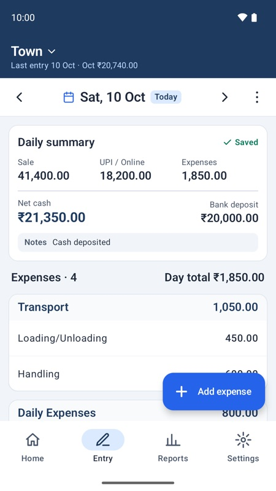
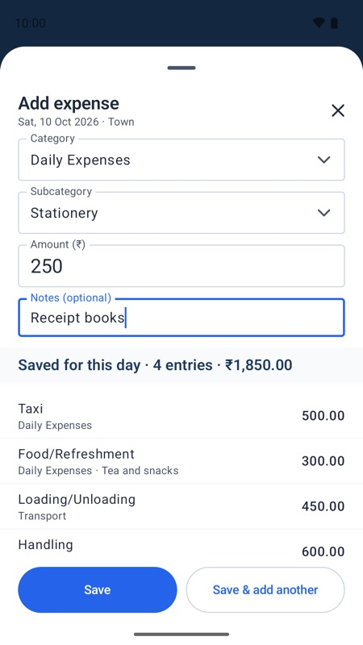
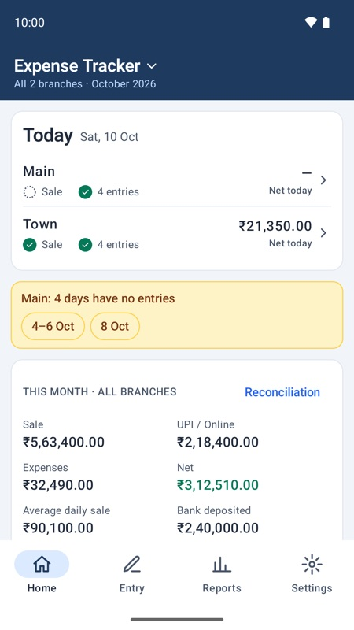
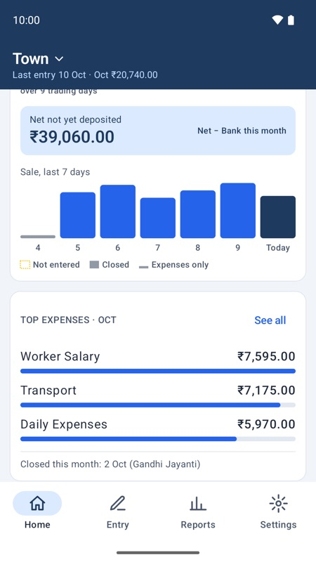
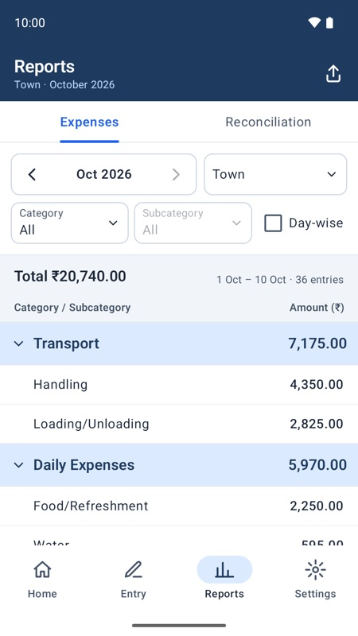
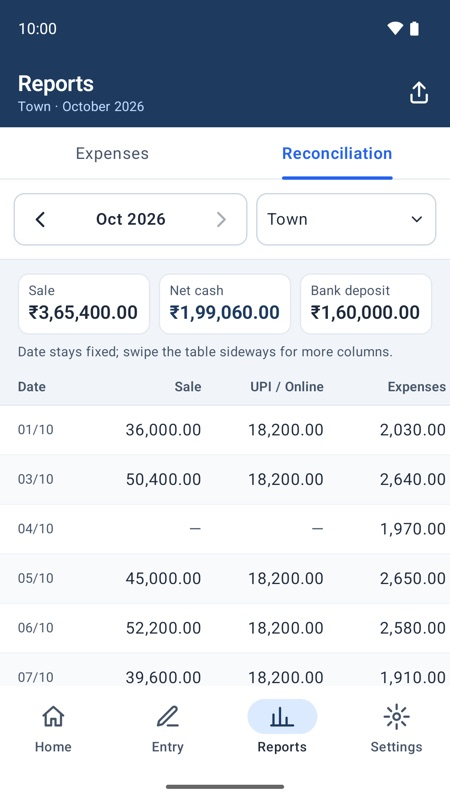
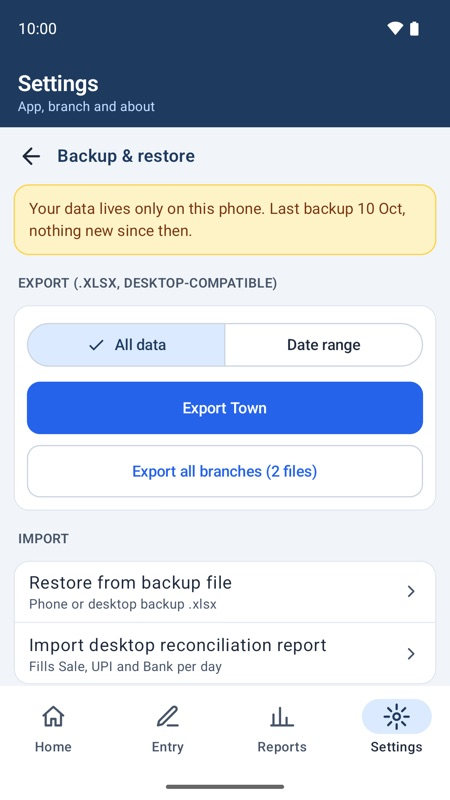
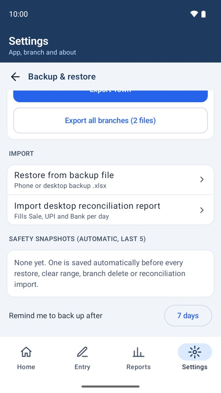
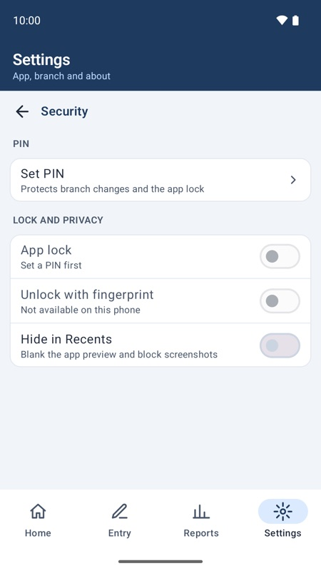

Expense Tracker — Daily business expenses & cash reconciliation | Version 1.0 | Last updated: 10 October 2026
By Simhadri Systems | simhadrisystems@gmail.com
The short version: enter the day's Sale, UPI and Bank figures and each expense on your phone,
check Home for missing days, use Reports for totals, and export a backup every week.
Your data lives only on your phone; nobody else keeps a copy.
The first time you open the app it walks you through four short steps:
Welcome — what the app does.
Your data stays on this phone — read and tap I understand and accept. The app works offline, has no account, and you are responsible for your backups.
Business name — printed on your reports.
Create a branch or restore a backup — a new branch starts with a standard set of categories you can change later. If you already have a backup file (from this app or the desktop app), choose Restore a backup; you will see a preview before anything is imported.
The bottom bar has four tabs: Home, Entry, Reports and Settings. If you have more than one branch, switch branches from the name at the top left.
2. Daily routine

Entry: summary and expenses for one day
Pick the day
Open Entry. Use the ◄ ► arrows or swipe on the date bar to change the day, or tap the date to pick from a calendar. The ⋮ menu has Go to today.
Daily summary
Tap the Daily summary card and enter the day's Sale, UPI / Online and Bank deposit. Use Notes for deposit details, shortages or remarks. The app works out:
Net cash = Sale − UPI − Expenses
Once saved, the card shows a green Saved tick. Tap it again to change the figures.
Add expenses
Tap Add expense (you can drag this button out of the way). Choose the Category and Subcategory — recently used subcategories come first — then type the Amount and an optional note.
If a subcategory has a default amount, leave Amount empty to use it.
Save & add another keeps the sheet open for the next entry. The list under the form shows everything saved for that day.
Already entered? If the same subcategory already has an entry that day, the app asks you to edit the existing one or add a note that makes the new one different. This stops accidental double entries.

Add expense
3. Fixing mistakes
Edit: tap an entry, or swipe it left. Change anything and save.
Delete one entry: open it and tap Delete. A message with Undo appears for a few seconds.
Several entries: long-press an entry to start selecting, tick the others, then Delete selected, Move to date or Copy to date.
Clear a day or a date range: use Clear day or range… in the ⋮ menu. A safety snapshot is saved first, so you can get the entries back from Backup & restore.
4. Home

All branches

One branch
With two or more branches, Home opens on All branches: today's status for each branch, days that need attention, and this month's combined figures. Tap a branch for its own Home, with a 7-day sale chart and the top expense categories.
Missing days: a past day with no Sale and no expenses is listed under the yellow notice. Tap the day to enter it, or mark it closed.
Closed days: if the business was shut, mark the day as closed (Holiday, Strike / Bandh or Other) from the missing-day notice or from Entry's ⋮ menu. Reopen day undoes it.
Holidays: 26 January, 15 August and 2 October are built in; add others in Settings → Holidays. A holiday with nothing entered counts as closed.
Average daily sale = the month's Sale ÷ trading days (days with a Sale or expenses). Closed days are left out. Last month's average is shown below for comparison.
Net not yet deposited = this month's Net cash − Bank deposits.
5. Reports

Expenses

Reconciliation
Expenses — totals by category and subcategory. Filter by Category or Subcategory, or tick Day-wise to see each day. Tap a category band to fold it.
Reconciliation — Sale, UPI, Expenses, Net cash and Bank deposit for each day, with totals and the average daily sale. The date column stays fixed; swipe the table sideways for more columns.
Period and branches: use ‹ › to change month. Tap the branch box to open Period and branches: This month, Last month, a chosen month or a date range, and tick one, several or all branches for a combined report.
Share: the share icon at the top right offers Share as PDF, Share as Excel and Print.
6. Branches, categories and business details
All in Settings. Settings under Branch settings apply to the branch chosen at the top of that section.
Branches — add a branch (with the standard categories or a copy of another branch's), rename or delete. Deleting saves a safety snapshot first. If you set a PIN, these changes ask for it.
Categories — add, rename, reorder and set default amounts. Changes apply when you tap Save; Discard cancels them all. A category that still has expenses cannot be deleted; remove a main category's subcategories first.
Business details — the name and two address lines printed at the top of that branch's reports and saved in its backups.
7. Backup and restore
Your data is only on this phone. If the phone is lost, reset or the app is uninstalled, the data is gone unless you exported a backup. The developer has no copy and cannot recover it.

Export

Restore and snapshots
Export a backup
Settings → Backup & restore:
Export <branch> saves one .xlsx file; you choose where (Downloads, Google Drive and so on).
Export all branches saves one file per branch into a folder you pick.
Date range exports only part of the data. It is a partial copy and does not count as a full backup.
Keep a copy off the phone — for example in Google Drive or on a computer. The app reminds you when changes have not been backed up for the number of days set in Remind me to back up after (7 by default).
Restore a backup
Tap Restore from backup file and pick the .xlsx file. You can also tap the file in Files, Drive or WhatsApp and open it with Expense Tracker — choose Just once, not Always.
Check the preview: the branch, date range and how many rows will be imported or skipped.
Choose Replace <branch> (everything in that branch is replaced) or New branch, then confirm.
Safety snapshots
Before every restore, clear, branch delete or reconciliation import, the app saves an automatic snapshot on the phone (the last 5 are kept). If something went wrong, tap the snapshot to put the branch back as it was. Snapshots are not a backup: they are deleted with the app.
Moving to a new phone
On the old phone: Export all branches and copy the files to Google Drive or your computer.
On the new phone: install the app and choose Restore a backup on the first screen, then restore each branch file.
8. Using it with the desktop app
If you also use the Expense Tracker desktop app, the two exchange data through the same .xlsx backup files.
Enter data in one place only — the phone. A restore replaces the whole branch, so entries made on the desktop after your last phone export would be lost at the next restore.
Phone → desktop: export a backup on the phone and restore it in the desktop app for reports and archive.
Desktop → phone: restore a desktop backup as above. A desktop backup has no daily summaries, so the branch keeps its Sale, UPI and Bank figures.
Desktop reconciliation report: Settings → Backup & restore → Import desktop reconciliation report fills Sale, UPI and Bank for the dates in the file. Existing notes are kept, and a safety snapshot is saved first.
9. Security

Settings → Security
PIN — 6 digits. It protects branch changes and the app lock. It stays on this phone and is never put in backup files. After 3 wrong attempts you must wait a short time before trying again.
App lock — asks for the PIN each time the app opens. Set a PIN first.
Unlock with fingerprint — on phones that support it; the PIN always works too.
Hide in Recents — blanks the app preview in the recent-apps screen and blocks screenshots.
Forgot your PIN? It cannot be reset — there is no developer account or server. The only way forward is Forgot PIN? → delete all local data, then restore your latest backup. Another reason to back up regularly.
10. Privacy and deleting your data
The app has no internet access, no account, no ads and no tracking. The developer never receives your data.
Your data is kept only on this phone, in Android's own backup to your Google account (if you have it switched on), and in the files you export.
Delete everything: Settings → Delete all local data (type DELETE to confirm), or uninstall the app. This cannot be undone.
A day shows as missing, but the business was closed.
Tap the day in the yellow notice and choose Mark as closed. It stops being flagged and is left out of the average daily sale.
The app will not let me save an expense.
The same subcategory already has an entry that day. Edit the existing entry, or add a note that makes the new one different.
I deleted something by mistake.
Tap Undo right away. For a cleared day or range, a restore or a deleted branch, use the safety snapshot in Backup & restore.
Tapping a backup file always opens the wrong app.
In the "Open with" chooser pick Expense Tracker and Just once. If you chose Always for another app, clear its defaults in Android Settings → Apps.
Something is not working.
Settings → Share diagnostics creates a small text file with technical details (no business data). Send it with a short description to simhadrisystems@gmail.com.